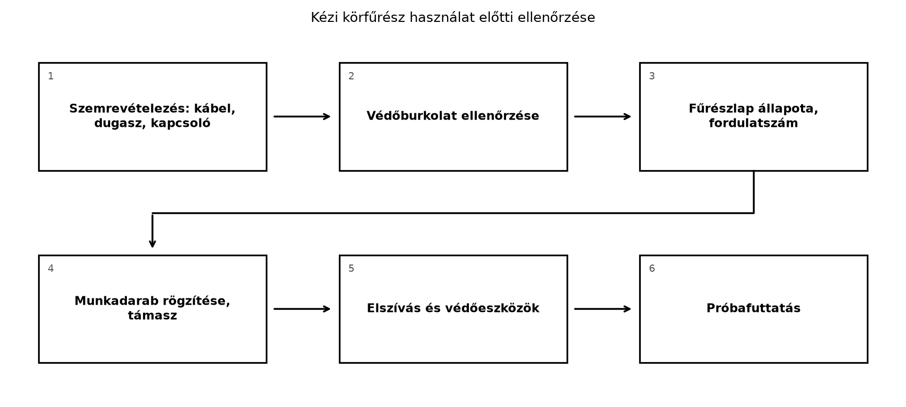

Helyszíni szereléskor gyakran kell lapanyagot méretre vágni, mosogató- vagy mosdókagyló-kivágást készíteni, vagy egy régi beépített szekrény hátlapját a fal síkjához igazítani. Ilyenkor a helyhez kötött gépek nem elérhetők, ezért kézi fűrészgépeket használunk. A kézi körfűrész egyenes, pontos darabolásra, a szúrófűrész íves és belső kivágásra, a rezgőfűrész keskeny, süllyesztett vágásra való. A láncfűrész inkább durva előkészítő munkára, gerendák méretre vágására alkalmas. Ha rosszul választasz gépet vagy fűrészlapot, akkor a vágás felég, a laminátum kiszakad, vagy a gép visszarúg. Ebben az alfejezetben megtanulod a kézi fűrészgépek biztonságos beállítását, a fűrészlap kiválasztását és a helyes vágástechnikát.
Képzeld el, hogy egy 18 mm vastag laminált bútorlapot kell 1200 × 600 mm-re szabnod a helyszínen, majd a mosogató íves kivágását is el kell készítened. Két műveletre van szükség:
Mindkét esetben a munkadarabot rögzíteni kell, a kábelt a vágásvonaltól távol kell vezetni, és a por elszívásáról porszívóval gondoskodunk. A következőkben e gépek felépítését, biztonságát és technológiáját vesszük végig.
Definíció. A kézi körfűrész hordozható, villanymotoros fűrészgép, amelynél a körfűrészlap közvetlenül a motor tengelyén vagy áttételen keresztül forog, és a kezelő a gépet a munkadarabon kézzel vezeti. Vágásmélysége és ferdesége állítható.
A kézi körfűrész fő részei:
A kézi körfűrész lapja mögött – a lappal egy síkban – hasítóék van: megakadályozza, hogy a vágási rés összezáródjon és a lapot beszorítsa; ez a visszarúgás elleni legfontosabb gépi védelem. Távolsága és helyzete a gépkönyv szerint állítandó (a lapnál vékonyabb, a vágási résnél keskenyebb); eltávolítani tilos. A merülőfűrészeknél a visszarúgás elleni védelmet a vezetősín és a gyártó által beépített visszarúgás-gátló adja. A mozgó védőburkolat a lap érintése ellen véd, a visszarúgást nem gátolja (ellenőrizendő: a gép típusa és a vonatkozó EN 62841 szabványrész).
Az alábbi ábra a kézi körfűrész fő részeit mutatja oldalnézetben és a vezetősínen; alul a visszarúgás képsora látható: a mozgó burkolatot a munkadarab éle nyitja, hasítóék nélkül az összezáródó rés befogja a lapot, hasítóékkel a rés nyitva marad.
Merülőfűrész (plunge saw) – olyan kézi körfűrész, amelynél a motor és a fűrészlap a talp alá süllyeszthető. A gép a munkadarab fölött indítható, majd a lap fokozatosan leereszthető; így pontos illesztéseket, bevágásokat, kivágásokat készíthetünk. Különösen vezetősínnel együtt ad tiszta, kiszakadásmentes vágást.
Definíció. A szúrófűrész (dekopírfűrész) keskeny, függőlegesen alternáló mozgást végző fűrészlappal vág, elsősorban íves, kanyargós vagy belső kivágásokat. A rezgőfűrész (multigép) hasonló elven működik, de a szerszám kis szögben oszcillál; süllyesztett vágásra, lefűrészelésre, tömítés eltávolítására is alkalmas.
Szúrófűrészlap kiválasztása:
Ingamozgás (orbitális mozgás): sok szúrófűrészen kapcsolható; a lap a vágás közben előre-hátra is lenget. Ez gyorsítja a vágást, de durvább felületet hagy. Íves, pontos vágásnál kapcsold ki; durva darabolásnál kapcsold be.
Figyelem. A láncfűrész nem asztalosipari precíziós gép, hanem durva fadöntésre, tűzifa vágásra, gerenda méretre darabolására való. Kezelése jogosultsághoz és gyakorlathoz kötött: erdészeti, mezőgazdasági munkáknál külön vizsga lehet szükséges (ellenőrizendő: hatályos jogszabály). Védőfelszerelés kötelező jellegű: vágásálló nadrág, védőbakancs, sisak arcvédővel, hallásvédelem, kesztyű. A legnagyobb veszély a vezetőlemez orrával (felső negyedével) való érintkezés: a gép a kezelő felé csap fel (orr-visszarúgás). Ezért csak működő láncfékkel, két kézzel, a lemezorr szabadon tartásával szabad dolgozni. Asztalosipari finommegmunkálásra ne használd; ilyenkor inkább szalagfűrészt vagy kézi fűrészt válassz.
Definíció. A visszarúgás az a hirtelen, a kezelő felé irányuló mozgás, amikor a forgó fűrészlap beszorul a vágási résbe, vagy a munkadarab megfeszül, és a gép ellenőrizetlenül hátralökődik.
Okai lehetnek:
Megelőzés:
Szabály. Minden kézi fűrészgép indítása előtt végezd el a következő ellenőrzést:

A fenti ábra a 2., 4. és 8. lépést mutatja: a lap a vágás után is alátámasztva marad, a fűrészlap csak 2–5 mm-rel lép ki a munkadarab alatt, a kezelő pedig a vágásvonal mellett, nem a meghosszabbításában áll.
Gépbiztonság. Kézi fűrészgépet csak betanított, felügyelt tanuló kezelhet; védőburkolat nélkül, egyedül, fáradtan ne végezd. A kézi körfűrészt két kézzel fogd, stabil állásban dolgozz. A kábelt mindig hátrébb, a vágásvonaltól távol vezessük; sose a kábel mögött vágjunk. A gépet csak akkor tedd le, ha a szerszám teljesen megállt. Tilos:
A fűrészlap kerületi sebessége (forgácsolási sebesség):
ahol a lapátmérő mm-ben, a fordulatszám 1/min-ben, m/s-ban.
Számítás. Egy kézi körfűrész névleges fordulatszáma , a lap átmérője . Mekkora a forgácsolási sebesség?
Behelyettesítve:
Ez tipikus érték fához (tájékoztató). ∎
Számítás. Ellenőrizd, hogy a lapra írt legnagyobb megengedett forgácsolási sebesség () nagyobb-e ennél. Ha a lapon szerepel, akkor megfelel. Ha a lap átmérője 165 mm, és a gép 5200 1/min fordulaton forog, akkor:
Ez is a megengedett tartományban van. ∎
Szabvány. A kézi, motoros szerszámok biztonsági követelményeit európai és nemzetközi szabványok írják le (például az EN 62841 sorozat – ellenőrizendő a pontos hatályos jelölés). A gyártó köteles a gépen feltüntetni a névleges feszültséget, frekvenciát, fordulatszámot és a védelmi osztályt. A faipari porképző műveleteknél – különösen keményfa- és MDF-por esetén – elszívást és légzésvédőt kell alkalmazni; a keményfa-por rákkeltő besorolású, a munkahelyi határértéket jogszabály állapítja meg (ellenőrizendő: aktuális határérték). A láncfűrész kezelése külön képzéshez, védőfelszereléshez és munkavédelmi előírásokhoz kötött (ellenőrizendő).
Technológiai lap. Termék: laminált bútorlap méretre szabása helyszíni szereléshez (1200 × 600 × 18 mm).
Anyag: 18 mm laminált forgácslap; fűrészlap (48 fogú, keményfém, finom); porszívó.
Szerszámok, gépek: kézi körfűrész vezetősínnel, mérőszalag, ceruza, szorítók, fűrészbakok, védőszemüveg, hallásvédelem, porálarc (FFP2).
Gépbiztonság. A művelet betanított, felügyelt tanulónak szól; védőburkolat nélkül, egyedül, fáradtan ne végezd. Indítás előtt ellenőrizd: kábel, dugasz, védőburkolat, lap épsége, vágásmélység, elszívás.
Lépések:
Mit ellenőrzünk? A vágás egyenességét, derékszögűségét, a méretpontosságot és a felület minőségét (kiszakadás, égés).
Mivel? Mérőszalag, derékszögelő, tolómérő, szemrevételezés, tapintás.
Eltérésnél javíts: a méretpontosságot új vágással vagy gyalulással, a kiszakadást csiszolással vagy élzárással.
Valós eset. Egy tanuló konyhai munkalapban mosogatókivágást készített szúrófűrésszel. A kivágás után a felső laminált felület a sarokban 5 mm-re kiszakadt, és a kivágás széle hullámos lett. A helyszíni szerelő ellenőrizte: a tanuló durva, széles lapot használt, az ingamozgást maximálisra hagyta, és a kivágás vonalát nem ragasztotta le. A hiba kijavítása: a kivágást a pontos vonalra csiszolták, a szakadt részt színazonos tömítővel javították. A tanulság: laminált lapok íves vágásához finom fogú, lefelé vágó szúrólapot kell használni, ingamozgás nélkül, és a vágásvonalat ragasztószalaggal védeni.
1. feladat (A). Sorold fel a kézi körfűrész fő részeit, és magyarázd el a mozgó védőburkolat szerepét.
2. feladat (A). Mi a különbség a kézi körfűrész és a merülőfűrész között?
3. feladat (B). Egy 190 mm átmérőjű kézi körfűrész névleges fordulatszáma 5200 1/min. A lapra a gyártó -ot ír. Szabad-e használni ezt a lapot? Válaszodat számítással indokold.
4. feladat (B). Írd le szöveges rajzzal egy szúrófűrészlap fogazását, és magyarázd el, milyen lapot választanál 6 mm ívsugár vágásához 18 mm vastag rétegelt lemezben.
5. feladat (C). Miért nem szabad kézi körfűrészt asztalra szerelve álló gépként használni? Nevezz meg legalább három veszélyt.
6. feladat (D). Készíts technológiai lapot egy 120 mm sugarú íves kivágáshoz 16 mm vastag laminált bútorlapban szúrófűrésszel. Add meg: anyag, szerszám, beállítások, lépések, ellenőrzések.
Önellenőrzés – válaszok:
1. feladat. Fő részek: motorház fogantyúval, kapcsoló, talp, fűrészlap, felső rögzített védőburkolat, alsó mozgó védőburkolat, vágásmélység- és ferdeségállító, porelszívó csonk, orsóretesz. A mozgó védőburkolat a gép előretolásakor felnyílik, visszahúzáskor rugóval zár, így a lap nem érhet a kezünkhöz, és a vágási rés is védve marad.
2. feladat. A kézi körfűrésznél a lap fixen kinyúlik a talp alól, és a vágást a darab szélétől indítjuk. A merülőfűrésznél a lap a talp síkjában rejtve van, és a gép a munkadarab fölött elindítható, majd a lap fokozatosan leereszthető; így pontos illesztések, bevésések, kivágások készíthetők.
3. feladat. . Mivel , a lap megfelel. ∎
4. feladat. Rajzleírás: a szúrólap keskeny, párhuzamos oldalú, fogai felfelé (a húzás irányába) vagy lefelé állnak. A lap vége felé keskenyedő hátú is lehet. 6 mm ívsugárhoz nagyon keskeny (kb. 2–3 mm széles) lapot kell választani, finom fogazással; ha a felső felület laminált, akkor lefelé vágó fogazású lapot, és ingamozgást ki kell kapcsolni.
5. feladat. Asztalra rögzítve a kézi körfűrész elveszti a hordozhatóság előnyét, és nem rendelkezik álló körfűrészekhez tervezett védőberendezésekkel: nincs hasítóék, nincs felső elszívó, nincs megfelelő munkadarab-támasz, nincs vészleállító. Veszélyek: visszarúgás, kéz érintése a laphoz, a munkadarab felcsapódása, kábel elvágása, a gép túlmelegedése. Álló gépként csak CE-jelölt, asztali kivitelű körfűrész használható.
6. feladat. Technológiai lap (rövid): anyag 16 mm laminált forgácslap; szerszám: szúrófűrész finom fogú, lefelé vágó lappal; beállítás: ingamozgás kikapcsolva, fordulatszám közepes; lépések: 1) jelölés, 2) indítónyílás fúrása a hulladékrészben, a vonal közelében, 3) lap beillesztése, 4) rögzítés, 5) vágás a vonal mentén (a hulladékoldalon), 6) a sugár ellenőrzése 120 mm-es sablonnal, 7) élek csiszolása. Ellenőrzés: sugár 120 ± 1 mm, él nincs kiszakadva, a felület nem égett.
A kézi fűrészgépek – kézi körfűrész, merülőfűrész, szúrófűrész, rezgőfűrész – a helyszíni és műhelybeli darabolás, íves vágás és süllyesztett vágás nélkülözhetetlen eszközei. A kézi körfűrész egyenes vágásra, vezetősínnel pontos, kiszakadásmentes vágásra való; a merülőfűrész süllyesztett indítást tesz lehetővé. A szúrófűrész íves, a rezgőfűrész nehezen hozzáférhető helyeken vág. A láncfűrész durva előkészítő munkára való, szigorú védőfelszereléssel és képzéssel. Használat előtt mindig ellenőrizd a kábel, a védőburkolat, a fűrészlap állapotát, a fordulatszámokat és a munkadarab rögzítését. A visszarúgás megelőzhető a megfelelő vágásmélységgel, alátámasztással, éles lappal és kétkezes vezetéssel. Továbbvitt eredmény. A kézi fűrészgépek biztonsági szemlélete és a használat előtti ellenőrzőlista átvihető a többi kézi kisgépre, például a Kézi gyalugép, kézi fúrógép, csavarozó és oszlopos fúrógép alfejezetre; a lapanyag-darabolási technológia pedig a Lapszabászgépek, táblafelosztók és a fűrészelési hibák fejezetben tér vissza.
Forrástípusok: kézi motoros szerszámok biztonsági szabványai (EN 62841 sorozat – ellenőrizendő), gyártói gépkönyvek és használati útmutatók, munkavédelmi oktatási anyagok, faipari gépek biztonsági gyakorlata.
Ellenőrizendő pontok: a láncfűrész-kezelés jogosultsági előírásai, a fapor-határérték aktuális értéke, a szabvány pontos jelölése, a technológiai lapban megadott tűrések és vágásmélység-értékek, a gyártói fordulatszám- és vágási adatok.